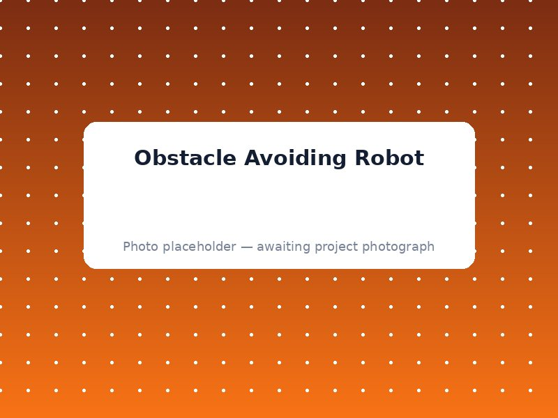

A robot car that senses obstacles ahead and steers around them by itself.

This little robot car drives forward on its own, and the moment it senses a wall or obstacle in front of it, it stops, turns, and continues in a new direction.
The ultrasonic sensor continuously checks the distance ahead. When an obstacle is detected within range, the Arduino commands the motor driver to reverse one wheel and turn the robot away from the obstacle.
Ultrasonic sensor, Motor driver (L298N), 2 DC motors, Chassis kit, Arduino Uno
Combines real-time distance measurement with simple decision-making code (if obstacle is close, turn; else, keep moving forward).
Robotics fundamentals — combining sensing and motor control to create autonomous behaviour.
We'll guide you through components, wiring and code — perfect for your exhibition.
Request This Project on WhatsApp